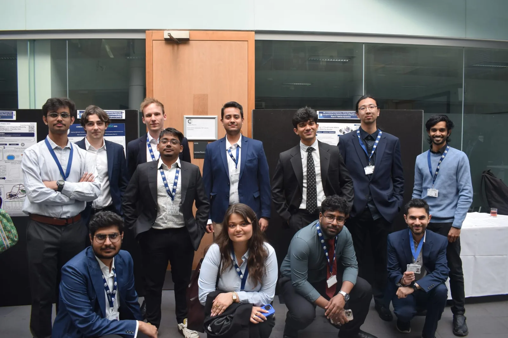
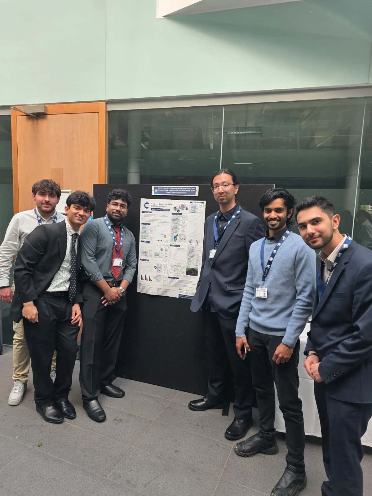
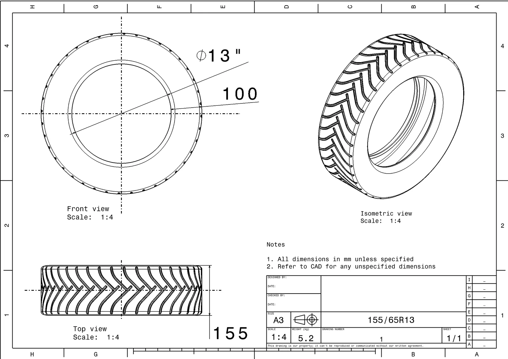
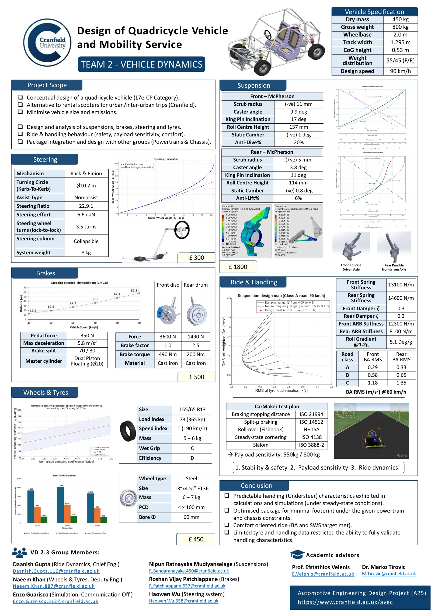
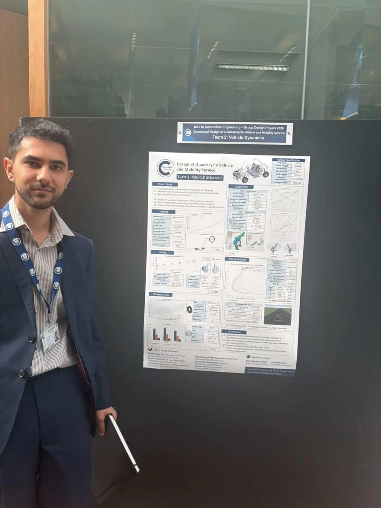
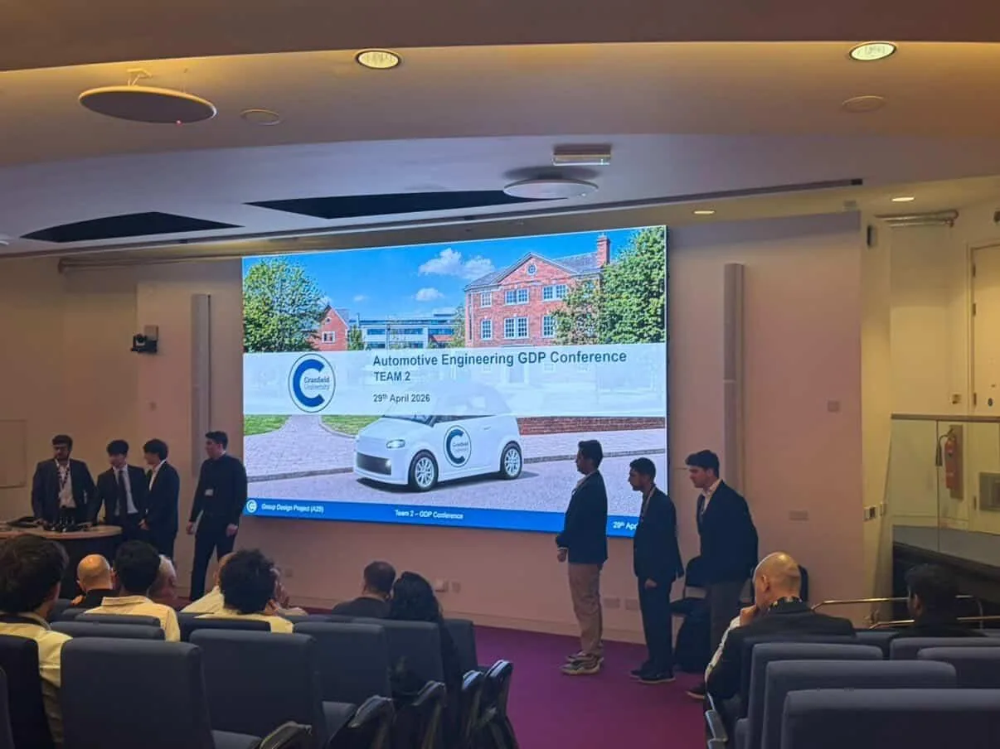

Group Design Project · Cranfield University · 2026
Quadricycle Wheels & Tyres
Wheel and tyre selection, tyre modelling and a tyre life-cycle review for an L7e quadricycle, designed for a Mobility-as-a-Service fleet running between Cranfield and Milton Keynes.

- 330 kgFront design load per wheel: 800 kg laden, 55/45 split, 1.5 load factor
- 10.6%Load headroom of the chosen tyre (LI 73, 365 kg), kept deliberately small
- ±27%Cornering-stiffness uncertainty, carried into the handling analysis
- 2.4 kgUnsprung mass saved by choosing 155/65 over 155/70 R13
My role
- Deputy Engineer, Vehicle Dynamics: oversaw the steering, brakes, suspension and ride-dynamics work within the department, and set agendas, project plans and weekly status updates with the Chief Engineer.
- Wheels and tyres engineer: owned tyre and wheel selection and gave the brakes, steering, chassis and powertrain teams one consistent set of tyre envelope and rolling-radius figures to work from.
- Failure mode avoidance: led it across the department, identifying likely problems and mitigations for each subsystem.

Tyre selection
The design load came from the worst-case mass and weight distribution the structures team provided, with a 1.5 factor to cover bumps, cornering and braking:
| Input | Front | Rear |
|---|---|---|
| Laden mass, distribution | 800 kg, 55/45 | |
| Static load per wheel | 2160 N | 1770 N |
| Design load per wheel (×1.5) | 330 kg | 270 kg |
| Minimum load index | 70 | 63 |
From a market search across six retailers I chose a 155/65 R13 73T all-season tyre. All-season suits a shared fleet: no seasonal changeovers, so more uptime. Load index 73 (365 kg) clears the 330 kg requirement by 10.6%. A much higher index would mean a heavier, stiffer carcass, adding unsprung mass and making the ride harsher. The 155/65 also has a lower sidewall than the 155/70 alternative, saving about 0.6 kg per tyre.
Wheel selection
A Pugh matrix compared steel, aluminium and steel-with-cover wheels on weight, cost, repairability, maintenance, durability and carbon footprint. Steel won: it costs less to buy, is easier to repair, and copes better with knocks in fleet use, at the cost of extra unsprung mass. The chosen part is an off-the-shelf 13 × 4.5 ET36, 4 × 100 PCD steel wheel with M12 grade 10.9 bolts, so no tooling cost. Fixing the PCD meant the suspension engineer could start the hub design.


Modelling the tyre without test data
There was no measured force-slip data for this tyre, so a Magic Formula fit wasn't possible. CarMaker could generate a tyre model, but the software itself flagged it as not validated. I used a linear model instead (Fy = Cα α, with Cα = nFz), sweeping the normalised cornering coefficient across the typical passenger-car range at unladen (450 kg), part-laden (650 kg) and fully laden (800 kg) mass.
n = 0.15 ± 0.04 deg−1 ⇒ Cα uncertainty ≈ ±27%
The main lesson was treating cornering stiffness as the output of a method with its own uncertainty, not a single number to look up. A sidewall-geometry regression (Hewson, 2005) gave ±30%, and a distribution across typical passenger cars (Gillespie, 1992) gave ±27%. The two methods aren't interchangeable, and neither captures how stiffness changes with vertical load. So the analysis was limited to primary handling, and the uncertainty band was carried into the ride-dynamics engineer's understeer-gradient work rather than hidden.
Simulation and sustainability
- CarMaker: set up with the simulation engineer to run M1-style steady-state cornering, split-μ braking, rollover and slalom tests. Because the tyre model wasn't validated, these were used for qualitative safety checks only, not for tyre-force results.
- Tyre life-cycle review: the literature showed that production (carbon black, synthetic rubber) and the use phase (rolling resistance, wear) dominate a tyre's impact, not end-of-life. Wear particulates were estimated with the EEA Guidebook's method.
Limitations and next steps
| Limitation | Next step |
|---|---|
| No tyre force data, so a linear model only | Rig-test a 155/65 R13 across the quadricycle's axle-load range and fit a Magic Formula model |
| Load sensitivity of cornering stiffness not captured | Use the fitted model to check secondary handling, when weight transfer changes the tyre loads |
| Wheel-bolt FEA not completed | Run FEA on the 4-bolt design and on a 3-bolt alternative (as on the 2009 Smart Fortwo) to see whether parts can be cut |
Poster and conference
The vehicle dynamics team presented its work as a poster and at the group design project conference on 29 April 2026.



Tools: MATLAB, IPG CarMaker, CATIA V5, Pugh matrix, ETRTO and UNECE standards
← All projects